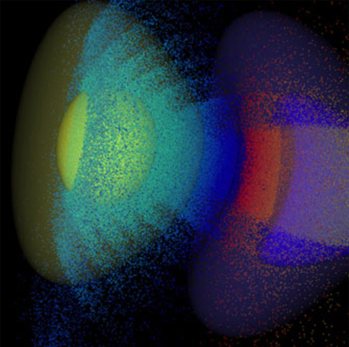

The UCLA Particle-in-Cell (PIC) and Kinetic Simulation Software Center (PICKSC) was created through an NSF Software Infrastructure for Sustained Innovation (SI2) Award. It is housed within the UCLA Departments of Physics and Astronomy and of Electrical Engineering, and Institute for Digital Research and Education (IDRE).
PICKSC’s mission:
PICKSC aims to make available and document illustrative open-source software programs for different computing hardware, a flexible open-source Framework for rapid construction of parallelized PIC programs, and distinct production programs; to host activities on developing and comparing different PIC algorithms and on documenting best practices for developing and using PIC programs; to coordinate a community development of educational software for undergraduate and graduate courses in plasma physics and computer science; and to sponsor an annual workshop to help build a community of developers and users.
Please contact us if you would like your news, software, presentations, publications, or notes to be posted on this site.
KNL Timings: PICKSC researchers have been updating our software to take full advantage of the many-core Intel Knight’s Landing (KNL) nodes. An OpenMP 3D electrostatic code from UPIC 2.0 has achieved a performance of 850 psec/particle-step on a single Intel KNL node. On a large memory KNL such as the 96 GB node on the Cori machine at NERSC, a PIC simulation with a billion particles will run in about one second per time step. A new branch of QuickPIC has also been compiled and run on Cori at NERSC. On a single KNL node with 68 threads, the total time spent on one particle per step is 3.82 ns (including 1 iteration).
Fortran OpenPMD File Writers: We have written an open source program that contains Fortran interfaces for parallel writing of 2D/3D mesh field data and particle data into HDF5 files using the OpenPMD standard. The software is open source and available on our GitHub repositories here.
B. J. Winjum, F. S. Tsung, and W. B. Mori, “Mitigation of stimulated Raman scattering in the kinetic regime by external magnetic fields.” PHYSICAL REVIEW E 98, 043208 (2018). doi link
C. McGuffey, J. May, T. Yabuuchi, H. Sawada, M-S. Wei, R. B. Stephens, C. Stoeckl, W. B. Mori, H. S. McLean, P. K. Patel, F. N. Beg, “Reduced fast electron transport in shock-heated plasma in multilayer targets due to self-generated magnetic fields.” PHYSICAL REVIEW E 98, 033208 (2018). doi link
Z. Nie, C.-H. Pai, J. Hua, C. Zhang, Y. Wu, Y. Wan, F. Li, J. Zhang, Z. Cheng, Q. Su, S. Liu, Y. Ma, X. Ning, Y. He, W. Lu, H.-H. Chu, J. Wang, W. B. Mori, and C. Joshi, “Relativistic, single-cycle tunable-infrared pulses generated by a tailored plasma density structure.” NATURE PHOTONICS 12, 489 (2018). doi link